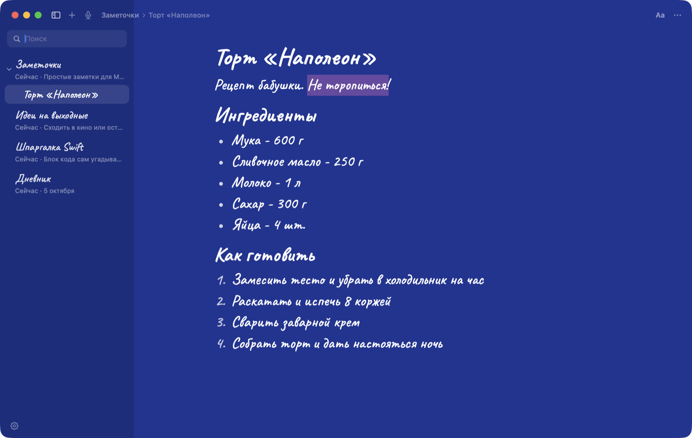
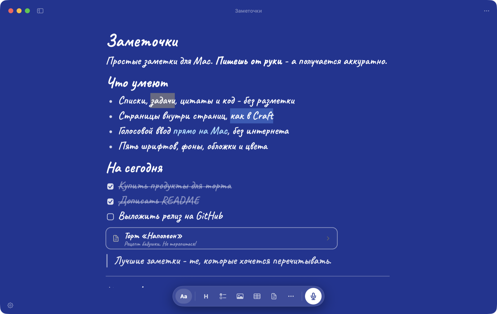

Заметочки
Простые и красивые заметки для Mac. Пишешь от руки — а получается аккуратно. Всё хранится только на твоём Mac.
Бесплатно и с открытым кодом · macOS 14 и новее
Что умеют
Без разметки
# — заголовок, - — список, [] — задача. Звёздочек и решёток не видно.
Панель над выделением
Жирный, курсив, зачёркивание, маркер восьми цветов и цвет текста.
Меню «/»
Заголовки, списки, чеклисты, цитаты, код, картинки, таблицы — с поиском.
Код с подсветкой
Язык угадывается сам, 17 языков, кнопка «Скопировать».
Страницы в страницах
Карточки прямо в тексте, дерево слева и крошки сверху — как в Craft.
Свой стиль
Пять шрифтов, фоны, обложки, цвета. Иконка в Dock подстраивается под стиль.
Голос и Т9
Голосовой ввод на самом Mac, без интернета. Исправление опечаток и подсказки слов.
Только локально
Мгновенное сохранение, резервные копии, экспорт всех заметок в Markdown.
Как выглядит

